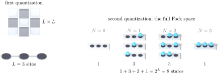
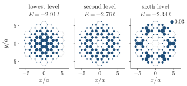
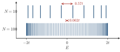

Page 6 of 12 of this session
1.8 First versus second quantization for the same problem
When does second quantization cost more than first quantization? We will now see that for a Hamiltonian that is purely single-particle it never does, and that with interactions the Fock space grows as \(2^L\) with the number of sites \(L\). The comparison takes first quantization as the \(L\times L\) matrix of one particle, since for \(N\) interacting electrons both languages need the \(\binom{L}{N}\) states with \(N\) electrons. At the end we come back to single particles, with the levels of a finite island and with graphene islands measured by STM.
\[H_\text{hop} = t\left(c_0^\dagger c_1 + c_1^\dagger c_0\right), \tag{1.2}\]
This is the hopping between two sites of Section 1.6, where \(c_1\) destroys an electron at site 1, \(c_0^\dagger\) creates one at site 0, and \(t\) is the hopping. The second-quantized Hamiltonian \(\sum_{ij}t_{ij}c_i^\dagger c_j\) of this page has the same form, with one term for every pair of orbitals \(i\) and \(j\).
For a tight-binding Hamiltonian that is purely single-particle, first and second quantization need in practice the same amount of work. Let us write the first-quantized Hamiltonian with hopping matrix elements \(t_{ij}\) between orbitals \(i,j\). The second-quantized version has the same \(t_{ij}\), multiplied by \(c_i^\dagger c_j\). To diagonalize either of them we use the same unitary transformation \(U\), and we obtain the same eigenvalues. The only formal difference is that in first quantization the coefficients that diagonalize the Hamiltonian form a vector, while in second quantization they become operators. The physics is the same in both cases.
1.9 Where the two formalisms differ and the exponential growth of the many-body problem
The difference between the two languages appears as soon as we add real many-body interactions, and it grows very fast. Let us take only three sites, with a generic quartic interaction term, which has four operators, added to the kinetic Hamiltonian. We can no longer restrict ourselves to single-particle states, and we need the full Fock space. This contains the empty state, three states with one electron, three states with two electrons and one state with all three sites occupied, which gives a total of \(2^3 = 8\) many-body states. Figure 1.1 shows the two sides of this comparison explicitly.

In general, for \(L\) sites the single-particle problem is an \(L \times L\) matrix, while the many-body problem is a \(2^L \times 2^L\) matrix, and we need \(2^L\) coefficients only to write the ground-state wave function. This is the reason why \(L \approx 20\) is already close to the practical limit of what we can do by brute force. The exact rate of growth depends on the kind of site that we have. Spinful fermions have four states per site, which are empty, up, down and doubly occupied. Spinless fermions have two, and they are relevant when a single spin species is isolated by strong magnetism or a strong field. Pure spin sites, which we need in Session 8 for quantum magnets and Kondo systems, also give an exponential growth, but with a different underlying algebra.
For \(L\) sites the single-particle problem is an \(L\times L\) matrix, or \(2L\times 2L\) with spin. The many-body problem is a \(2^L\times 2^L\) matrix for spinless fermions and a \(4^L\times 4^L\) matrix for spinful fermions. So every new site doubles the size of the many-body problem, or multiplies it by four with spin.
The steps Counting the Fock space of L sites
We start with the three spinless sites of Figure 1.1. Each site is empty or occupied, so a many-body state is a list of three occupations, such as \(|101\rangle\). With \(N\) electrons we choose which \(N\) of the three sites are occupied, which gives \(\binom{3}{N}\) states, and the sum over \(N\) is
\[\sum_{N=0}^{3}\binom{3}{N}=1+3+3+1=8=2^3.\]
For \(L\) sites the same count gives
\[\sum_{N=0}^{L}\binom{L}{N}=2^L,\]
which is the binomial expansion of \((1+1)^L\), or more directly two choices for each of the \(L\) sites. A Hamiltonian that conserves \(N\) has a matrix made of blocks of fixed \(N\). The largest block, with \(N=L/2\), still grows exponentially, and for \(L=20\) it has \(\binom{20}{10}=184\,756\) states out of \(2^{20}=1\,048\,576\).
For spinful fermions every site has the four states empty, up, down and doubly occupied, so the count is \(4^L=2^{2L}\), the same as for \(2L\) spinless orbitals. For three sites this gives \(64\) states, while the single-particle matrix is \(6\times 6\).
We take three sites of spinful fermions, with four states per site. How many many-body states does the Fock space have?
Show the answers
- A. ✗ False
This is false. Adding \(4+4+4\) is wrong, since the states of the sites combine independently. For two sites we already have \(4\times 4=16\) states, which are all the pairs of site states.
- B. ✓ True
This is true. Each site has four states, which are empty, up, down and doubly occupied. Three sites give \(4^3=64\) states, while the single-particle matrix is only \(6\times 6\).
- C. ✗ False
This is false. The number \(6\) is the count of single-particle levels. The many-body states are the ways to fill them, and \(\sum_N\binom{6}{N}=2^6=64\).
The Fock space grows exponentially with the number of sites, while the single-particle matrix grows linearly.
We store one many-body state of \(20\) spinful sites as a list of real coefficients, with \(8\) bytes per coefficient. How much memory does it take? How much does it take if we keep only the states with \(N=20\) electrons and \(S_z=0\)? Compare with \(20\) spinless sites.
Solution
With spin each site has four states, so the Fock space has \(4^{20}\approx 1.1\times10^{12}\) states. One coefficient per state takes \(8.8\times10^{12}\) bytes, which is \(8.8\) TB, with \(1\) TB \(=10^{12}\) bytes.
With \(N=20\) and \(S_z=0\) there are \(10\) electrons with spin up and \(10\) with spin down. The electrons with spin up occupy \(10\) of the \(20\) sites, which we can choose in \(\binom{20}{10}=184\,756\) ways, and the same holds for spin down. This gives \(\binom{20}{10}^2\approx 3.4\times10^{10}\) states, which take \(273\) GB. The two conserved quantities reduce the size by a factor of about \(32\), which is less than the factor \(4^3=64\) that three more sites cost.
For \(20\) spinless sites there are \(2^{20}=1\,048\,576\) coefficients, which take \(8.4\) MB.
So one state of \(20\) spinless sites is within reach, and a method that keeps only a few states in memory and applies \(H\) to them works there. The full \(2^{20}\times 2^{20}\) matrix is not within reach, since its \(2^{40}\) entries take \(8.8\) TB, as much as one state of \(20\) spinful sites. One state of \(20\) spinful sites is far beyond the memory of a laptop, even with the two conserved quantities. This is why exact diagonalization of spinful models stops at a smaller number of sites, and why we need the approximate methods of this session.
1.10 A first look at eigenstates in finite tight-binding islands
Before we go to interactions, let us look at what a purely single-particle Hamiltonian already gives us, because this is something that we can compare directly with experiment. Let us take a tight-binding Hamiltonian \(H = \sum_{ij} t_{ij}\, c_i^\dagger c_j\) on a honeycomb lattice, cut into a finite island that is triangular, hexagonal or rectangular, and let us diagonalize it. The probability density of a given eigenvector in real space can be compared directly with what a scanning tunneling microscope measures. Qualitatively, these states look like the finite-size states of a “particle in a box”. The lowest-energy state has its maximum close to the center of the island, and the higher states have more and more nodes. This is a good first check, since single-particle diagonalization, with nothing more, already gives a structure that we can recognize and that we can measure in experiments.

g2_honeycomb_island.py
With low-temperature STM and scanning tunneling spectroscopy we measure the atomic structure and the local density of states of a single island. This was done for graphene quantum dots with edges in the zigzag direction, grown on an iridium(111) substrate, with sizes from a couple of nanometers up to about \(20\) nm. The observed states are analogous to the states of a particle in a box for relativistic massless fermions, and they can be modeled quantitatively with a relativistic wave equation and with atomistic tight-binding calculations. The measurement is in this article. Our reading is that these are the levels of the island close to \(E=0\), where the bands of graphene form Dirac cones. So they are not the lowest levels of Schematic 1.8, which lie close to the bottom of the band at \(-3t\).
We make a finite island larger and diagonalize it again. What happens to the spacing between the levels?
Show the answers
- A. ✗ False
This is false. For a chain with \(N\) sites, the levels are \(-2t\cos(n\pi/(N+1))\). The spacing at the center is \(0.57t\) for \(N=10\) and \(0.062t\) for \(N=100\), so it is smaller for the larger island.

The levels of an open chain for \(N=10\) and \(N=100\). Both fill the same window from \(-2t\) to \(2t\), so the spacing at the center is smaller for the larger chain. - B. ✓ True
This is true. The band has a fixed width, \(4t\) for a chain. More sites put more levels in this window, so the levels become denser and approach the continuum.
- C. ✗ False
This is false. For \(N=100\) the spacing at the center is still \(0.062t\), which is finite. It goes as \(2\pi t/(N+1)\) and it vanishes only when \(N\to\infty\).
The spacing goes to zero only in the limit of an infinite system, where the levels form a band.
An island of the honeycomb lattice has the hopping \(-t\) between first neighbors,
\[H=-t\sum_{\langle ij\rangle}c_i^\dagger c_j,\qquad t>0.\]
Each map shows the density of one level on the 96 sites. The area of a disc is the density on that site. Which map is the lowest level?
Show the answers
- A. ✗ False
This is false. This is the second level, at \(E=-2.76t\). Each of its two degenerate states changes sign under \(\mathbf r\to-\mathbf r\), and its density on the central hexagon is small. Its weight sits at a mean distance of \(3.74\) bond lengths from the center, against \(2.87\) for the lowest level.
- B. ✓ True
This is true. With the hopping \(-t\) the lowest state can be chosen positive on every site, by the theorem of Perron-Frobenius, so it has no node. Its density is largest on the central hexagon and falls toward the edge, as for the lowest state of a particle in a box, and its energy is \(-2.91t\).
- C. ✗ False
This is false. This is the sixth level, at \(E=-2.34t\), counting a degenerate level once. Its density on the central hexagon is less than a hundredth of its largest value, and its weight sits toward the edge, at a mean distance of \(4.43\) bond lengths from the center.
The lowest level has no node. The higher levels have nodes, and up to the tenth level their mean distance from the center is larger than the \(2.87\) bond lengths of the lowest level. Their largest discs are not always further out, since the fourth level, at \(-2.52t\), changes sign on a ring around the center and has its largest density on the central hexagon.
Notebook check-in: session1.ipynb, “Finite sized chains” (Core), and “Density of states of a finite system as a function of the system size” (Challenge)
Diagonalize a finite chain or island, and look at how the spatial profiles of the eigenstates and the density of states change when you make the system larger. This is the numerical version of the particle-in-a-box argument above. It is also a good place to see how we reach an infinite periodic system from the finite-size case, which we do in Session 2.
Try it. Run the loop over the lengths and look at the energy panel. Check that the levels fill the window from \(-2t\) to \(2t\). Then plot the distance between the two levels closest to zero on a log scale, and check that it falls as \(1/L\).
We will use two software tools in all sessions. The first one is PyQula, which is a Python library for tight-binding and mean-field calculations, topological properties and spectral functions, and which we use through the Jupyter notebooks of the course. The second one is Quantum Lattice, which is a graphical interface built on PyQula that does not need any coding. Both are open source, and it is useful to have both open next to these notes.
- The growth as \(2^L\) is the starting point of Session 7. Section 7.3 counts the coefficients of the wave function, and the matrix product states of Section 7.4 compress them.
- Spinless fermions and spin-1/2 sites have the same counting, and the Jordan-Wigner transformation of Section 7.2b maps one onto the other.
- The finite chain becomes the infinite chain of Section 2.5, where the levels form the band \(\epsilon_\varphi=-2t\cos\varphi\).